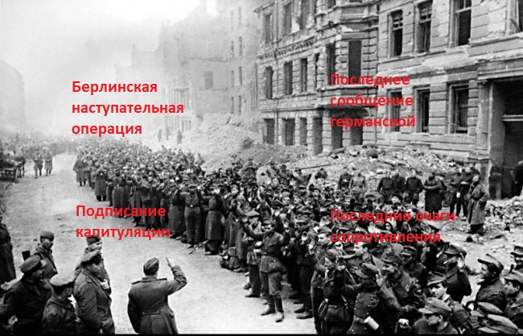

◄ Назад | На главную | Вперед ►

Последние дни войны
Берлинская наступательная операция
В апреле 1945 года Красная армия вплотную подошла к Берлину. Советские войска к началу операции насчитывали 149 стрелковых и 12 кавалерийских дивизий, 13 танковых и 7 механизированных корпусов, 15 отдельных танковых и самоходных бригад общей численностью более 1 900 000 человек. Участвовавшие в операции 1-я и 2-я армии Войска Польского насчитывали 10 пехотных и 1 танковую дивизию, а также 1 отдельную кавалерийскую бригаду, общей численностью 155 900 человек. Всего в операции принимали участие более 2 миллионов солдат и офицеров[4], 6250 танков и самоходных орудий, 41 600 орудий и миномётов, 7500 самолётов.
Немецкие войска занимали оборону вдоль западных берегов рек Одер и Нейсе. На подступах к Берлину и в самом городе была сосредоточена группировка войск, имевшая в своём составе 62 дивизии (в том числе 48 пехотных, 4 танковые и 10 моторизованных), 37 отдельных пехотных полков и около 100 отдельных пехотных батальонов, а также значительное количество артиллерийских частей и подразделений. Эта группировка насчитывала около миллиона человек, 1500 танков, 10 400 орудий и миномётов, 3300 боевых самолётов[5]. Сам Берлин также был превращён в сильнейший укреплённый район и подготовлен к ведению уличных боёв. Вокруг Берлина было создано три оборонительных кольца, внутри города сооружено более 400 железобетонных долговременных огневых точек с гарнизонами до тысячи человек. Сам берлинский гарнизон насчитывал в своём составе около 200 000 человек.
В ходе Берлинской операции Красная Армия потеряла безвозвратно 78 291 человека и 274 184 человека составили санитарные потери[4]. То есть в сутки из строя выбывало более 15 000 солдат и офицеров. Ещё 8892 человека потеряли польские войска, из них 2825 человек — безвозвратно. В ходе прорыва немецкой обороны, в том числе и для боёв в городе, широко использовались танки. В городских условиях они не могли использовать все свои преимущества и часто становились удобной мишенью для противотанковых средств немцев. Это также привело к высоким потерям: за две недели боёв Красная Армия потеряла треть участвовавших в Берлинской операции танков и САУ, что составило 1997 единиц. Также было потеряно 2108 орудий и миномётов и 917 боевых самолётов, но главную задачу операции советские войска решили полностью: разгромили 70 пехотных, 12 танковых и 11 моторизованных дивизий противника, взяли в плен около 480 тысяч человек[6], овладели столицей Германии и фактически принудили Германию к капитуляции. Рано утром 1 мая 1945 года, во время штурма Рейхстага, сержант Михаил Егоров и младший сержант Мелитон Кантария под руководством младшего лейтенанта А. П. Береста водрузили Знамя Победы на крыше здания Рейхстага[7].
Подписание капитуляции

1 мая 1945 года в 3:50 на командный пункт 8-й гвардейской армии был доставлен начальник генерального штаба сухопутных сил вермахта генерал пехоты Кребс, заявивший, что он уполномочен вести переговоры о перемирии. Однако Сталин распорядился не вести переговоров, кроме как о безоговорочной капитуляции. Немецкому командованию был поставлен ультиматум: если до 10 часов не будет дано согласие на безоговорочную капитуляцию, советскими войсками будет нанесён сокрушительный удар. Не получив ответа, советские войска в 10:40 открыли ураганный огонь по остаткам обороны в центре Берлина. К 18 часам стало известно, что требования о капитуляции были отклонены. После этого начался последний штурм центральной части города, где находилась Имперская канцелярия. Всю ночь, с 1 на 2 мая, продолжались бои за канцелярию. К утру все помещения были заняты советскими солдатами. Ночью 2 мая в 1:50 по радио было принято следующее сообщение: «Высылаем своих парламентёров на мост Бисмарк-штрассе. Прекращаем военные действия». Позднее заместитель министра пропаганды доктор Фриче обратился к советскому командованию с просьбой о разрешении выступить по радио с обращением к немецким войскам берлинского гарнизона о прекращении сопротивления. К 15 часам остатки берлинского гарнизона (более 134 тысяч человек) сдались в плен. 7 мая в 2:41 (по центральноевропейскому времени) в Реймсе, был подписан акт о безоговорочной капитуляции Германии, который вступал в силу 8 мая в 23:01 (9 мая в 01:01 по московскому времени).
От имени немецкого Главнокомандования протокол подписал генерал Йодль в присутствии генерала Уолтера Смита (от имени союзных экспедиционных сил), генерала Ивана Суслопарова (от имени советского Главнокомандования), а также генерала французской армии Франсуа Севеза, подписавшего акт в качестве свидетеля. Однако у генерала Суслопарова не было разрешения из Москвы подписывать акт о капитуляции Германии, Советский Союз настаивал на подписании другого акта. 8 мая в 22:43 по центральноевропейскому времени (23:43 по московскому времени) генерал-фельдмаршал Вильгельм Кейтель, а также представитель люфтваффе генерал-полковник Штумпф и Кригсмарине адмирал фон Фридебург, имевшие соответствующие полномочия от Дёница, подписали ещё один акт о капитуляции, который также вступал в силу 9 мая в 00:01 по московскому времени. Приняв капитуляцию, Советский Союз не подписал мир с Германией, то есть остался с Германией в состоянии войны. Война с Германией была окончена де-юре 25 января 1955 года принятием Президиумом Верховного Совета СССР соответствующего решения.
Последнее сообщение германской ставки
Из ставки гросс-адмирала Дёница Верховное главнокомандование вооружённых сил сообщает: В Восточной Пруссии германские войска во вторник до последней возможности удерживали устье Вислы и западную часть косы Фрише Нерунг. Особенно отличилась 7-я пехотная дивизия. За её образцовые действия командир дивизии генерал фон Заукен награждён дубовыми листьями с мечами и бриллиантами к Рыцарскому кресту Железного креста. Главные силы нашей группы армий в Курляндии, в течение многих месяцев под командованием генерала пехоты Хильперта оказывавшие сильное сопротивление превосходящим советским танковым и пехотным соединениям и мужественно выдержавшие шесть крупных сражений, покрыли себя бессмертной славой. Эта группа армий отклонила любую преждевременную капитуляцию. Уцелевшие самолёты в образцовом порядке доставили на Запад раненых и отцов семейств. Офицеры и штабы остались со своими войсками. В полночь в соответствии с принятыми нами условиями любые военные действия и любые передвижения войск были прекращены. Защитники Бреслау, которые в течение двух месяцев отбивали все советские атаки, после героического сопротивления в последний момент уступили превосходству противника. На Юго-Восточном и Восточном фронтах все штабы главных соединений вплоть до Дрездена получили приказ прекратить огонь. Восстанию чехов почти во всей Богемии и Моравии удалось помешать выполнению условий капитуляции и нашим связям в этом районе. Сведений о группах армий Лёра, Рендулича и Шернера штаб верховного главнокомандования до сих пор ещё не получил. Сражающиеся далеко от фатерланда защитники опорных пунктов на побережье Атлантического океана, войска в Норвегии и гарнизоны на островах Эгейского моря, соблюдая повиновение и дисциплину, поддержали честь германского солдата. Итак, начиная с полуночи оружие на всех фронтах смолкло. По приказу гросс-адмирала вермахт прекратил ставшую бессмысленной борьбу. Тем самым закончилось почти шестилетнее героическое единоборство. Оно принесло нам великие победы, но и тяжёлые поражения. Германский вермахт под конец с почётом уступил огромному превосходству противника в силах. Германский солдат, верный своей присяге, отдавая себя до конца своему народу, свершил то, что не забудется в веках. Тыл до последнего момента поддерживал его изо всех своих сил, неся при этом тяжелейшие жертвы. Неповторимые свершения фронта и тыла найдут свою окончательную оценку в последующем справедливом приговоре истории. Даже противник не сможет отказать в своём уважении славным деяниям и жертвам германских солдат на земле, на воде и в воздухе. Поэтому каждый солдат может честно и гордо выпустить из рук своё оружие и в эти тяжелейшие часы нашей истории храбро и уверенно обратиться к труду ради вечной жизни нашего народа. В этот час вермахт чтит память своих погибших солдат. Погибшие обязывают нас к безоговорочной верности, повиновению и дисциплине по отношению к истекающей кровью многочисленных ран Родине.
Последние очаги сопротивления
К моменту капитуляции немцы удерживали ряд опорных пунктов на атлантическом побережье Франции (Дюнкерк, Ла-Рошель, Лорьян), острова Гернси, Джерси и ряд других, северную часть Германии, территорию в Центральной Европе (часть южной Германии, Австрии, Чехословакии), плацдармы восточнее Данцига на косе Путцигер-Нерунг (устье Вислы) и в Курляндии (на территории Латвийской ССР), острова греческого архипелага, Данию и большую часть Норвегии, часть прибрежных территорий Голландии. Немецкие войска в Центральной Европе, стоявшие перед советским фронтом, не подчинились приказу о капитуляции и стали отходить на запад, стремясь перейти к Союзникам. 10 мая советские войска заняли плацдарм на косе Путцигер-Нерунг с городом Хель, 11 мая взята под контроль Курляндия. К 14 мая закончилось преследование отступавших на запад немецких войск в Центральной Европе. С 9 по 14 мая на всех фронтах советскими войсками взято в плен более 1 миллиона 230 тысяч немецких солдат и офицеров и 101 генерал. 15 мая Совинформбюро объявило об окончании приёма пленных на всех фронтах[9].